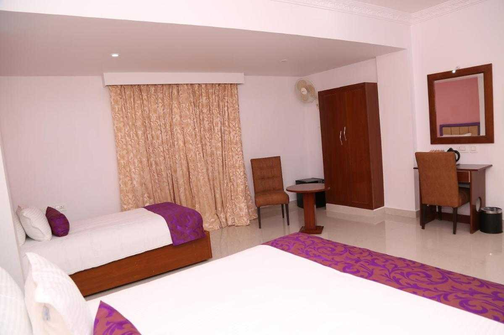

Famous Places to Visit
Kalisanathar Temple
One of the twelve Jyotirlingas in India
KanchiKamakotiPeetam Temple
One of the twelve Jyotirlingas in India

Kamakshi Amma Temple
One of the twelve Jyotirlingas in India
Varadharaja Perumala Temple
One of the twelve Jyotirlingas in India
DevrajaSwami Temple
One of the twelve Jyotirlingas in India
Where to Stay

Sri Rams Residency
3-star hotel in kanchipuram INR 3000 onwards
Regency Kanchipuram by GRT Hotels
4-start hotel starting from INR 7000

MM Legacy Kanchipuram
4-star hotel starting from INR 6000

Aalayam Kancheepuram
Have a friendly stay here with a buget friendly price from INR 2000

SBK Park Inn
The SBK Park Inn in Kanchipuram received positive reviews for its spacious